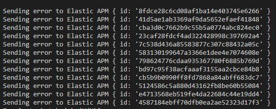
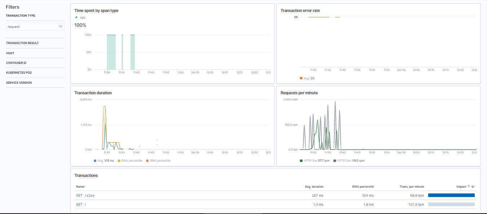
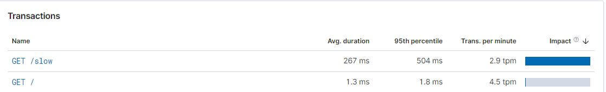
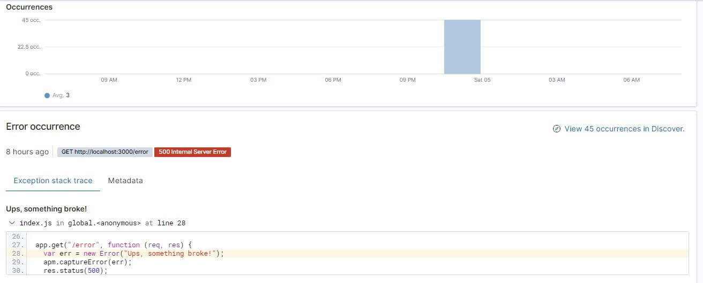
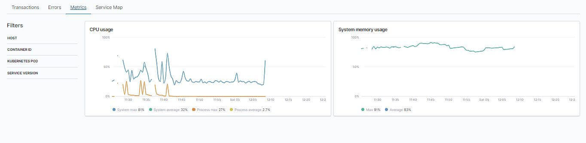
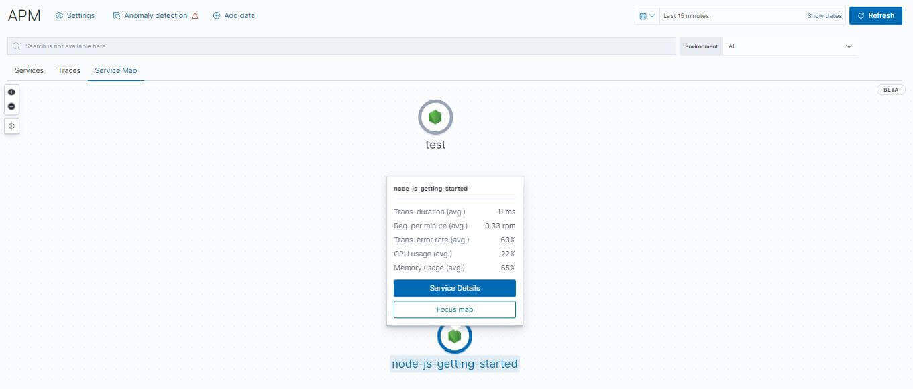
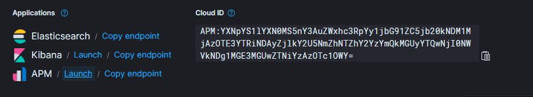
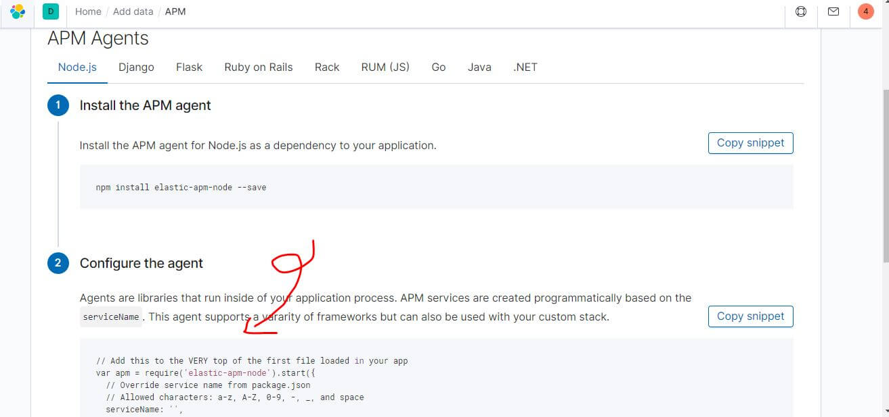
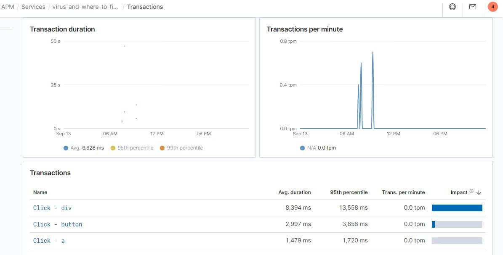

Elastic APM 基礎教學
這篇文章將簡介怎麼運用 APM client 和 server 端的函式庫來做應用程式層級的監控，接下來會示範如何安裝並使用 APM (Application Performance Monitoring) 傳送 Node.js 服務狀態到 Elasticsearch 中，並使用 Kibana 即時監控相關資料。
APM 是 Application Performance Monitoring 的縮寫，主要是即時監控軟體服務的工具，會蒐集效能相關資訊像是 request 回應時間、資料庫 query 時間等等，幫助我們更快找到效能瓶頸去修正。
為什麼服務的監控很重要?
- 同一台主機可能很多服務，要知道哪些服務是耗哪些資源才有優化方向
解決的痛點:
- 方便分析服務是耗什麼資源 (CPU、記憶體、流量)
- 可以更快的知道哪裡 (某個 API) 花太多時間
- 可以用來記錄流程面 (非系統掛掉) 的錯誤

Node.js 實作
Server 端實作大致分成幾個步驟
npm install express --save- 開 API
/一般 API/slow回應很慢的 API/erro拋出錯誤的 API
1 | const app = require("express")(); |
Client 端就是在瀏覽器一直打 API，方便我們之後看報表
1 | function test() { |
安裝 APM
npm install elastic-apm-node --save- 把 APM 引入並放在程式最前面
- 補上
apm.captureError(err);
1 | // Add this to the VERY top of the first file loaded in your app |
運用 Kibana 監看 APM
目標是讓 APM 的紀錄進來，所以到 Kibana 選單中 Observability 的 APM 監控，有幾個方便的功能:
Transactions 記錄各個 API 花了多少時間
時間維度的圖表

各 API 分析，Slow 明顯比較慢

Errors 記錄錯誤是在哪裏發生
可以看出發生的行數

Metrics 基本硬體資訊紀錄

Service Map 所有的服務地圖

應用程式層級監控
在使用者操作前端網頁時，如果發生了不可預期的錯誤，我們該怎麼記錄起來? 在還沒有使用其他工具前，如果要監控並記錄錯誤，直觀通常就是寫出像是底下的程式，透過實作 logMyErrors 及搭配的後端 API 來協助。
- 連線不正常: 先存 storage 下次使用者重新進入網頁時偷偷打 API 送回後端資料庫
- 連線正常: 直接打 API 傳回去 DB 存
1 | let data; |
Elastic APM 深入理解
當然也有其他工具像是最近幾年也蠻多人使用的 Sentry，不過這系列主要是討論 Elastic Stack，APM 的存在就是為了簡化實作的部分，提供了:
- 應用程式層的監控
- client 端相關效能監控 (real user monitoring)
主要提供兩個大家會想知道的答案 (根本只有攻城獅才想知道?!!XDDD)
- 每次 request 的回應時間
- 服務在什麼時候出現哪些錯誤
一套完整的 APM 會由以下組成
- APM Agents: 是一個 lib 需要寫進去我們的程式裡
- APM Server:
- beat framwork 實作的 http server
- 協助驗證並轉換格式寫入 Elasticsearch
- 資料灌爆來不及寫入的時候可以當 bufffer
- 與使用者之間多了一層 server 對資料來說也更安全
- 開 API 讓更多類型的 client 容易串接
- Elasticsearch: 全文檢索的搜尋引擎
- Kibana: 相當於 Elasticsearch 的後台 GUI
APM Data Modal
APM 記錄了不同類型的資訊:
- Spans: 算是最基礎的單位，紀錄的內容包含執行的行數，會記錄某個活動的開始到結束
- transaction.id: 紀錄對應到哪個 transaction
- parent.id: Span 可能被 Span 或 transaction 包含
- start time and duration
- name
- type
- stack trace (optional)
- Transactions: 多加上一些特殊 attribute 的 span，通常紀錄像是打到 server 的 request、Batch 或背景任務，通常理論上就是看這個
- 事件發生當下的 timestamp
- unique id, type, name
- 相關的執行環境
- service: environment, framework, language
- host: architecture, hostname, IP
- process: args, PID, PPID
- URL: full, domain, port, query
- user: email, ID, username (如果有)
- Errors: 原始的 exception 訊息
- 例外發生時的訊息
- 在哪裏發生的
- 相關的 Transaction ID
APM Server
最重要的就是要先下載並安裝 APM server，裝在本機跑起來之後預設會是 http://localhost:8200，然後會傳到 http://localhost:9200 的 Elasticsearch，把 apm-server.yml 中的 apm-server.rum.enabled，使用 Elastic Cloud 的話就是要注意要記得選有 APM 的，選對就會看到如下圖，接著點 kibana 首頁的 Add APM 照著教學裡面自動帶入的參數使用即可。
確認選到有 APM 模組的

按照下圖範例中自動帶入的連結、token
APM Agents
APM agents 主要分成 Server 端和 Client 端兩種，且都需要自行加入到專案中，依照常撰寫的語言進行下載配置即可，Server 端 Node.js 的實作在剛剛已經示範過了。下面介紹的是 Client 端 JS 的部分，其中 serviceName 是用來分類用的，可自行命名。在 Client 端的實作也可以叫做 Real User Monitoring:
npm install -S @elastic/apm-rum- 在程式最開始加入下面配置，可參考武漢肺炎疫情地圖這個專案
1 | var apm = ininApm({ |
APM agents 在配置好後通常會自動蒐集相關可以蒐集的數據資訊，應該理論上就可以從這些 client 或 Server 中蒐集的數據找到程式的效能瓶頸，當然其他進階的部分還是要看相關 API 進行相關程式碼撰寫，初步可以看出的相關資訊可能如下:
- Server 是否有 latency
- 部分類似 GA 的統計
進行網頁操作後產生的數據範例

喜歡這篇文章，請幫忙拍拍手喔 🤣